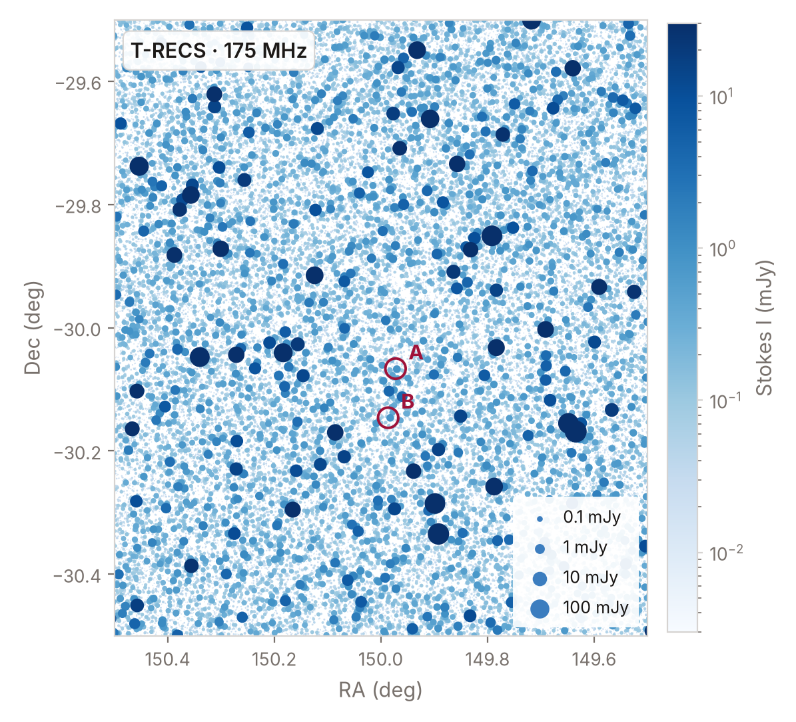
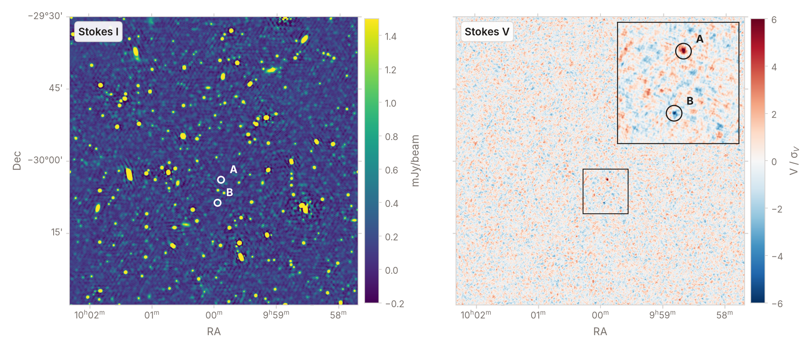

Science motivation
At the low frequencies targeted by SKA-Low, deep total-intensity images quickly reach the confusion limit, where faint sources blend into the population of brighter, unresolved neighbours. Circular polarization offers a way around this problem. Since the extragalactic radio background is mostly unpolarized in Stokes V, a source with a high degree of circular polarization can stand out in Stokes V even when it is lost in Stokes I.
This is the case for coherent emission processes such as the electron-cyclotron maser, which powers the auroral radio emission of stars, brown dwarfs and star–planet interacting systems (Trigilio et al. 2023, arXiv:2305.00809; Yu et al. 2023, arXiv:2310.01240). With LOFAR, the V-LoTSS survey has already exploited this approach to identify circularly polarized sources over a large area of the sky (Callingham et al. 2023, arXiv:2212.09815).
- Inject two faint, highly circularly polarized sources into a realistic, confusion-limited SKA-Low field.
- Compare their visibility in Stokes I and Stokes V images restored with a common 20″ beam.
- Run a blind Stokes V search and measure both the recovered significance and the false-positive rate.
Simulation setup
A single 2 h SKA-LOW-AAstar observation at 175 MHz, with the 50 MHz band split into 64 channels of 781.25 kHz to keep bandwidth smearing below 5% at the image edge. Thermal noise was injected from the station SEFD. The visibilities were imaged with WSClean (Briggs robust 0) in Stokes I (multiscale) and Stokes V over a 1° field, and both images were restored with a common 20″ beam.
The background is a realistic extragalactic continuum population at 175 MHz generated with T-RECS (Bonaldi et al. 2019, arXiv:1805.05222), including sources down to 10 µJy, with their flux densities, spectral indices and morphologies, and no circular polarization. On top of it we injected two unresolved sources with a circular polarization fraction of 80% and opposite signs: source A, with V = +205 µJy (I = 256 µJy), and source B, with V = −128 µJy (I = 160 µJy). Each sits 8–12″ from a Stokes I neighbour 3–5 times brighter than itself.
| Setting | Value |
|---|---|
| Facility | SKA-LOW-AAstar |
| Array config | SKA_OST_ARRAY_CONFIG_2_3_1 |
| Stations | 307 · 38 m · station SEFD 4532 Jy |
| Frequency / bandwidth | 175 MHz · 50 MHz (64 × 781.25 kHz) |
| Observation time | 7200 s · 360 × 20 s integrations |
| Sky model | T-RECS (60 462 sources, V = 0) + A and B (80% circular) |
| Image / pixel | 900 × 900 · 4″/px · FoV 1° |
| Weighting | Briggs robust 0 · 5″ Gaussian taper |
| Restoring beam | 20″ × 20″ (Stokes I and V) |

Results
In Stokes I the image noise is dominated by confusion (σI ≈ 107 µJy/beam, from the MAD), so source A sits at only 2.4σI and source B at 1.5σI. Within 2′ of each target there are 23 and 29 Stokes I peaks at least as bright as the target itself: both are indistinguishable from the background population.
In Stokes V the confusing background disappears and the image is thermal-noise limited, with σV = 25.6 µJy/beam. A blind search above 5σV recovers both sources, A at +8.1σV (peak 208.5 µJy/beam) and B at −6.3σV (peak −160.7 µJy/beam), with no spurious detections (0.016 expected for Gaussian noise).

Takeaways
- Stokes I is confusion-limited: with 60 462 T-RECS sources in the field, σI ≈ 107 µJy/beam after 2 h, four times the Stokes V noise, and both targets fall below 2.5σI.
- Stokes V removes the confusing background: the same visibilities reach σV = 25.6 µJy/beam, and both 80% polarized sources are recovered blindly at +8.1σV and −6.3σV, with no false positives above 5σV.
- Thresholds can be set before observing: lowering the cut to 4.5σV adds two unmatched peaks, against 0.19 expected for Gaussian noise, so the simulation also calibrates the false-positive rate of a real search.
- Science hook: auroral emission from stars, brown dwarfs and star–planet interacting systems is strongly circularly polarized, so SKA-Low Stokes V imaging can find these emitters in fields where they are hopeless in total intensity.